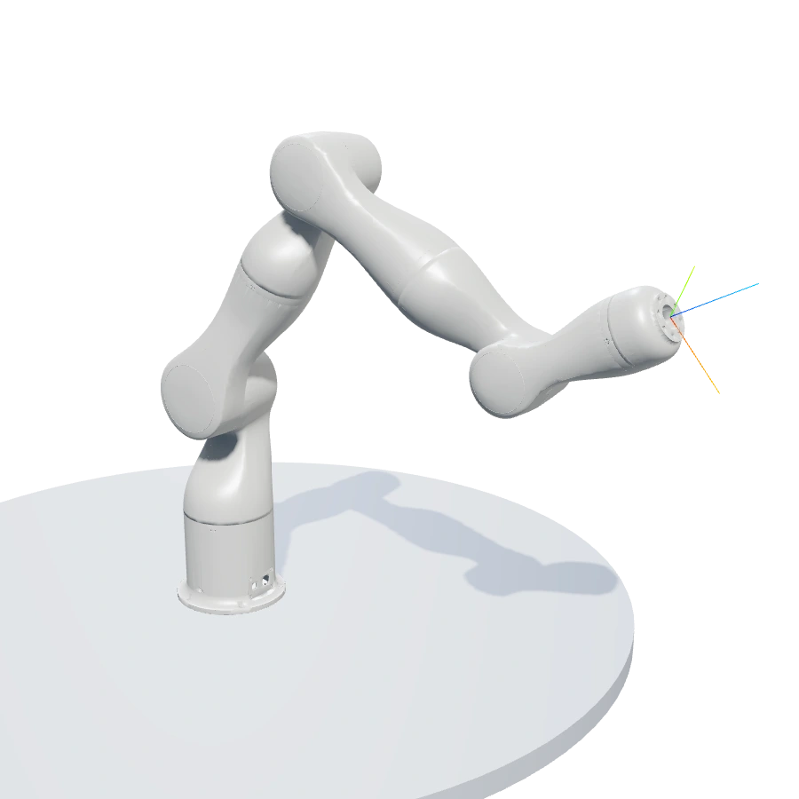
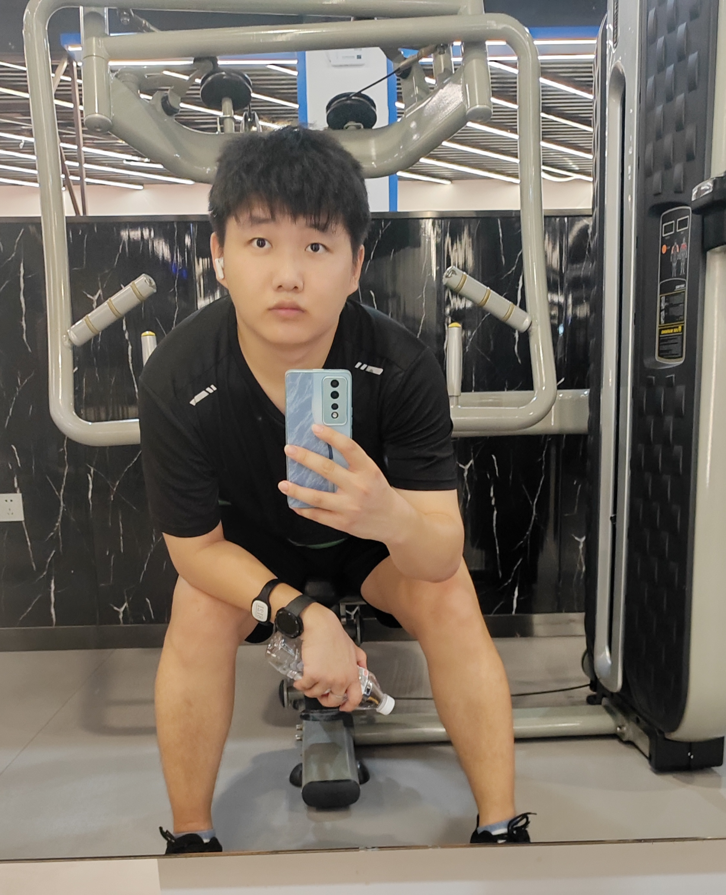

动作与结构映射
通过人体骨骼与手部关键点进行运动结构映射，探索跨形态的动作对应。
研究进行中系统与控制、示范学习、物理交互，逐步走向跨具身技能迁移。
通过人体骨骼与手部关键点进行运动结构映射，探索跨形态的动作对应。
研究进行中透明物体感知与跟踪验证，结合力觉信息的空间化表征。
探索与验证中探索世界模型数据生成、小样本泛化，以及任务相关的几何结构。
探索进行中连接外骨骼力反馈、双臂示范采集、模型训练和真实机器人部署。
研究与系统验证中30 Hz 高层神经策略与 1 kHz 底层阻抗控制，结合在线刚度请求、能量约束与教师—学生策略蒸馏路线。
查看方法与架构图完整路线涵盖 6 个探索分支、跨具身闭环和下一步研究问题；在研方向与已发表成果分别列示。

从仿真，走向真实控制。
参与机器人控制系统开发，将运动学、轨迹规划、动力学辨识与柔顺控制连接到仿真、可视化和真实硬件。
在线入口提供 Talon 模型预览；实时仿真控制尚未开放。
从无人实验室到双臂操作，展示算法与系统在真实任务中的验证。
通过主端操作接口控制真实机械臂。
双臂操作、运动控制与物理仿真。
Bio-Inspired Phase-Aware Skill Graph for Robust Long-Horizon Robotic Manipulation with Promptable Control
Jincheng Sun, Yang Luo, Yaqi Chu, et al.
Biomimetics 11(9), 622，2026，已发表。
方法与实验网站机器人辅助膝关节置换术柔顺控制
两篇合作论文关注自适应阻尼和无斥力约束势场，均获《机器人》录用。
查看论文及作者信息10 项专利记录，覆盖轨迹边界、柔顺操作、遥操作和手部重定向；授权与申请状态分别列示。
查看专利目录
机器人系统与物理交互技能
我是孙锦程，东北大学人工智能方向博士生，在中国科学院沈阳自动化研究所开展机器人研究，导师为 赵忆文、罗阳。
从无人实验室、自研七自由度机械臂到医疗机器人，我持续参与运动控制、系统集成与现场实验；近年进一步转向双臂灵巧操作、示范学习和力反馈。
我关注如何把人的操作经验转化为机器人可执行、可迁移的技能，连接数据采集、策略训练、在线部署与反馈验证。
我积极拥抱 AI，探索将其融入科研、软件开发与自动化。除了机器人研究，我也构建 AI 跨设备自动化工具，让想法更快进入可运行、可检验的系统。